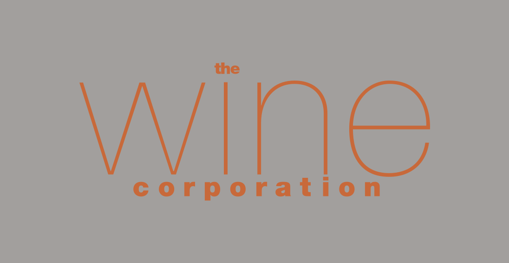

Awards
Our Wines Are Our Pride

The excellence of our wines has been proved by the following awards.
Our Wines Are Our Pride
The excellence of our wines has been proved by the following awards.
| Logo | Name | Year | Description |
|---|---|---|---|
| The Best Craft Wine in California | 1956 | Our Sauvignon Blanc wine was entered for the first time in a competition and immediately received this award. Experts noted the amazing aroma and luxurious taste of our wine. This award has become an important impetus for the development of our company. | |
| The Most Intense Red Wine | 1992 | In 1992, in conditions of very tough competition from winemakers in our state, our wine managed to take first place. It was preferred by most critics of Orange Wine Fund. They noted the bright and rich taste of our Pinot Noir, its ruby color, and intense aroma. | |
|  | Year's Best Chardonnay | 2016 | Our Chardonnay got a gold medal at the Wine Corporation Annual Contest. Our wine scored the highest number of points - 99 out of 100 possible, and was rated by experts and critics as “amazing”. By the way, a few bottles of Chardonnay produced in 2016 are still on sale. |
| The Best American Riesling | 2022 | In 2022, our wine was presented in this competition among all US wine producers for the first time. And right off the bat, it was able to get the highest award. Experts rated our Riesling wine at 97 points out of 100 possible, noting its excellent taste. |